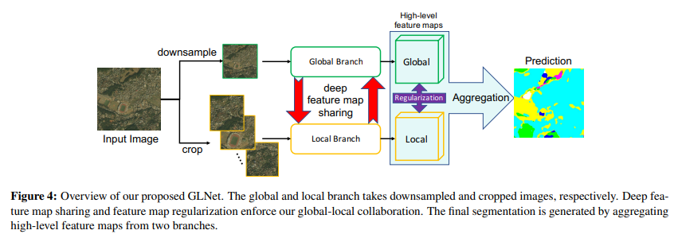

Collaborative global-local networks for memory-efficient segmentation of ultra-high resolution images
Motivation
现有方法在超分辨率图像上的处理都是下采样或者切块，要不就损失局部信息，要不就损失上下文信息
显存占用对于语义分割任务产生了限制，现有部分需要在显存占用和精度之间做取舍
单独的全局网络或者局部网络效果都不好
Contribution
- 首次提出memory-efficient（内存/显存高效）的超分图分割方法，不仅准确率高，显存占用也小。
- 能够有效使用全局上下文信息和局部精细结构，分割精度高，这两个模块都是必不可少的。
- 针对超分图分割的类别不平衡问题，提出由粗到细的GLNet算法，进一步提高了性能。
GLNet通过全局分支和局部分支，分别处理下采样的全局图和裁剪的局部图。它们通过feature map跨层共享，相互作用和调节。在准确率和显存占用上取得了很好的平衡。为了进一步解决类别不平衡问题，当分割较小的前景区时，这篇文章提供了GLNet的变体，其中全局分支提供了额外的边界框（bounding box）。它的设计使得能够综合使用全局信息和局部信息，确保精准地分割。同时极大地减少了GPU的使用，因为送到网络的是下采样的全局图和裁剪的局部图，原来整张的高清图是不会送进去的。
Related Work
语义分割的质量和精度
FCN是第一个高质量分割的CNN结构；U-net使用encoder-decoder结构，使用跳级连接将低级特征连接到高级特征，相似结构还有DeconvNet和SegNet；DeepLab使用膨胀卷积（也叫空洞卷积）扩大感受野，条件随机场用来建模空间关系。但是这些方法的显存占用都很高。
随着语义分割在很多实时/低延迟 任务（比如自动驾驶）中越来越重要，高效快速的分割获得越来越多的关注。ENet在早期使用下采样，使用非对称的encoder-decoder结构减少浮点运算；ICNet将多分辨率的分支的feature map在适当的标签下级联处理，并进行模型压缩。然而这些方法没有针对超分辨率图像，实验表明没有取得效率和精度的平衡（主要是精度不够）。
多尺度和上下文聚合
多尺度是集成高层和底层特征捕获不同粒度信息的模式，在分割上很有效。在RefineNet中，通过上采样低分辨率特征，构造多路径精化块来结合多尺度特征。文献32采用拉普拉斯金字塔结构利用高层特征来细化低分辨率图构造的边界。FPN逐步上采样不同尺度的特征图，并且自上而下地聚合它们。分级自动缩放网络（HAZN）采用两步自动缩放策略将粗级的边界框和预测分数送到细级。
上下文聚合在编码局部邻域空间甚至非局部信息方面也起着关键作用。ParseNet采用全局池化聚合不同级别的场景上下文。DeepLab中的空洞卷积和ASPP（空间金字塔池化）在不丢失feature map的情况下扩大感受野，从而将全局上下文聚合到局部信息中，PSPNet中的金字塔池实现了类似的效果。在ContextNet，BiSeNet和GUN中，深/浅分支被结合到全局上下文和高分辨率细节上。文献37把上下文信息看作是RNN建模的长期依存关系。需要注意在GLNet中，在输入级（全局/局部分支）和特征级都采用了上下文聚合。
超分辨率分割数据集
DeepGlobe陆地覆盖分类数据集是第一个提供在农村地区高分辨率亚米级卫星图像的公开benchmark。提供了7类像素级ground truth的mask：城市，农业，牧场，森林，水，荒地，和未知。包含1146张标注的卫星图，大小都是2448 ×× 2448，比以往的陆地覆盖分类数据集有更高的分辨率和更大的挑战性。
ISIC收集大量的皮肤镜图像。它的子集ISIC Lesion Boundary Segmentation由2594张皮肤癌患者筛查的样本图像组成，所有图像都标注了ground truth的二值mask，指出了原发皮肤损伤的位置。超过64%的图像有超分辨率，最大的图像是6682 ×× 4401像素。
Inria Aerial数据集涵盖了不同城市景观，从人口稠密的都市区到阿尔卑斯度假胜地。提供了180张5000 ×× 5000像素的图片，都是二值mask，表示有建筑区和没有建筑区，与DeepGlobe不同的是，它将训练测试集按城市分类，而不是随机分类。
协同全局-局部网络
GLNet结构
N张超分图像，图像片段$\mathcal{D}=\{(\boldsymbol{I}_{i}, \boldsymbol{S}_{i})\}_{i=1}^{N}$，满足$\boldsymbol{I}_{i}, \boldsymbol{S}_{i} \in \mathbb{R}^{H \times W}$，全局分支获得下采样低分辨率的图$g$并且$\mathcal{D}^{\mathrm{lr}}=\{(\boldsymbol{I}_{i}^{\mathrm{lr}}, \boldsymbol{S}_{i}^{\mathrm{lr}})\}_{i=1}^{N}$，局部分支$L$对于$\mathcal{D}$

在分割过程中，各个分支的各层特征与另外的分支共享，然后通过分支层对两组高层特征图聚合生成最终的分割mask。为了约束两个分支，稳定训练过程，局部分支训练采用弱耦合正则化（weakly-coupled）。
深度特征图共享
为了与local分支协作，需要将global分支中local patch对应空间位置裁剪，然后上采样到和local分支 feature map相同的大小，然后被同一层的local分支的feature map concatenate，通过对称的方式，local分支的feature map也是这么收集的。首先对local的feature map下采样，匹配从原图裁剪对应位置的patch，然后合并在一起（与局部patch被裁剪的顺序相同），形成完整的特征图，它的大小与全局分支的feature map相同。在送到下一层之前，这些局部特征也被concat到全局特征中。
图5展示了这个过程，除了最后一层外，它是layer-wise（逐层）的。共享的方向可以是单向的（G→L）也可以是双向（G⇄L）的。每一层中，全局上下文特征和局部精细特征相互融合借鉴。
带正则化的分支聚合
两个分支的聚合是通过聚合层$f_{agg}$，它由一个3 × 3的卷积核的卷积层实现。它从local分支的$L_{th}$层$\hat{X}_{L}^{\mathrm{Loc}}$和对应的global分支的$\hat{\boldsymbol{X}}_{L}^{\mathrm{Glb}}$，通过channel拼接（concat），输出层$f_{agg}$得到最后的分割结果$\hat{S}^{\mathrm{Agg}}$。另外为了实施$\hat{S}^{\mathrm{Agg}}$的主要分割loss（main loss），采用了两种辅助的loss，为了强制局部分支的输出$\hat{S}^{\mathrm{Loc}}$和global分支的输出$\hat{S}^{\mathrm{Glb}}$靠近它们的分割map（local patch/global downsmaple），能够让训练过程更稳定。
在实践中发现local分支容易过拟合local detail（局部细节），从而overriding在global分支的学习，为了避免local分支学习速度比global分支快，在两个分支最后一层特征映射之间添加了弱耦合正则化（weakly-coupled）。具体的说是用2范数$\lambda|\hat{\boldsymbol{X}}_{L}^{\mathrm{Loc}}-\hat{\boldsymbol{X}}_{L}^{\mathrm{Glb}}|_{2}$，防止$\hat{\boldsymbol{X}}_{L}^{\mathrm{Loc}}$与$\hat{\boldsymbol{X}}_{L}^{\mathrm{Glb}}$之间有太大的变化，根据经验，λλ固定为0.15。这种正则化主要是让local分支的训练变慢，与global分支的学习同步，它只更新local分支的参数。
由粗到细的GLNet
分割是为了分离前景与背景，（比如二值mask），前景通常在超分图中占据很小的空间。这种类别不平衡会严重影响性能。以ISIC数据集为例，99%的图像背景比前景多，超过60%的图像前景像素比例少于20%（图8中的蓝条），

很多local patch只包含背景，这会导致梯度不正常。
为了缓解类别不平衡，提出GLNet由粗到细的两阶段变体（如图6）。首先用全局分支对下采样的图像进行粗分割，然后为前景区创建一个边界框（动态调整边界框大小，以便边界区域前背景比例约为1，有助于第二步的类别平衡）。然后将原图的边界前景区送到local分支精细分割。
与并行的全局-局部分支不同，这种由粗到细的GLNet是两个分支的序列组合，在边界框细化过程中，只有边界框类的feature map才会由全局分支共享到局部分支，然后共享回来。
所有边界框之外的区域都会预测为背景。所以由粗到细的GLNet通过只选择细尺度处理 而降低了计算成本（因为粗尺度直接不考虑了）。
Experiment
在DeepGlobe，Inria Aerial数据集评估GLNet表现，在ISIC数据集上评估由粗到细的GLNet的表现。
实验设置
采用带有ResNet50的FPN（特征金字塔）作为backbone。深度特征共享策略在自底向上阶段应用于ResNet50的conv2到conv5 block，在自顶向下和smoothing阶段应用于FPN中。对于FPN中最后横向拼接阶段，采用特征图正则化，聚合到最终的分割结果中。
为了简单起见，下采样的全局图和裁剪的局部patch大小相同，都为500 ×× 500像素，相邻的patch有50像素的重叠避免卷积层边界消失。使用γ=6γ=6的focal loss作为main loss和两个辅助loss。main loss和辅助loss都为1.0，特征图正则化项的λλ设为0.15。
为了测量模型的GPU占用，使用命令行工具gpustat，minibatch大小为1，避免计算任何梯度。训练和测试只用一张卡。
用Pytorch实现，优化器Adam($\beta_1=0.9，\beta_2=0.999$)global分支学习率1e-4，local分支学习率 2e−5，训练minibatch为6。
DeepGlobe
803张超分图，像素都为2448 ×× 2448，随机划分训练验证测试为455，207，142张。包含7个类别，有1个类别是未知。
从浅到深的特征图共享
为了评估global-local的策略，逐步将模型的特征图共享从浅层到深层，对于下采样的全局图或者单独的局部图，每个分支的平均交并比分别只能达到57.3%和66.4%
通过两个分支高层特征的聚合以及正则化，mIoU可以到70.3%，当只共享global的一层到local时，聚合结果增加了0.2%，当所有层都共享时，mIoU到了70.9%，如果是双向共享，mIoU到了71.6%。
消融实验表明通过深度共享，正则化和聚合策略，全局分支和局部分支能够有效地协同，即使用双向共享，显存占用也只从1189MB略微增加到1865MB。
图7放大（a），（b）可视化改进的效果。全局结果（图7（3））有网状伪影，局部结果（图7（4））有不准确的边界，从聚合，浅层共享到深度共享，显著观察到误分类和不准确边界的情况明显减少。
准确性和显存占用比较
使用全局图和局部图进行训练和推理可能会产生不同的结果，主要是模型感受野，卷积核大小和填充策略不同，这使得训练推理有不同的选择，因此在消融实验中仔细比较了两种方法训练的模型。对一个模型训练和测试两次，然后选择最佳结果。
固定图像/patch大小的粗略比较（所有模型都使用500×500×500像素）
表3展示了所有模型全局推理下的最高mIoU，但是都占用了很多显存。在基于patch的推理中显存下降了，但是准确度也大幅度下降，只有GLNet实现了mIoU和显存占用的平衡，在图1（a）中画出了每种方法最佳的mIoU。
深入对比不同图像/patch大小
选择FCN和ICNet对不同图像/patch大小深入比较，因为它们分别具有较高的mIoU和较小的显存占用。在图1（b）和（c）中绘制了消融实验的细节。对于FCN和ICNet，精度更高因为着显存占用大，反之也是，这证明了经典模型无法平衡效率和精度。
ISIC
ISIC皮肤损害边界分割挑战数据集包含2596超分辨率图，随机切分训练，验证测试为2077， 260， 259张图。
由粗到细的分割
在严重不平衡的ISIC数据集上，global和local分支分别只能实现72.7%和48.5%的mIoU，当使用由粗到细的策略时，可以清楚看到更加平衡的前景背景比例（图8（1）中的红条）。
通过裁剪前景边界框，local分支只在更小的类别平衡的图像上训练，默认将裁掉的边界外区域作为背景。在类别平衡的图像总共，G→L的mIoU是73.9%，G⇄L的mIoU是75.2%，这种情况下，全局分支使用更加精确的全局上下文信息，因为对裁剪更小的图像进行下采样，丢失的信息会更少。由粗到细的方法表明它能较好地捕获上下文信息，解决类别不平衡问题。表4中是消融实验，图8（2）是可视化结果。

精度和显存比较
Inria Aerial
包含180张超分图，每个都是5000×× 5000像素，随机划分训练验证测试为126，27，27张。表6说明了深度特征图共享策略的有效性。测试结果如表7，GLNet的mIoU有71.2%，在显存占用和准确率上都比其他方法要好。
总结
提出了GLNet做超分辨率图像分割，综合利用了全局上下文和局部精细信息提高了在超分辨率上的效果，并且没有多大的显存占用。同时也通过由粗到细的分割法解决类别不平衡问题。
在超分辨率中，效率和精度的平衡至关重要，这篇文章的工作是超分辨率分割效率和精度的先驱。